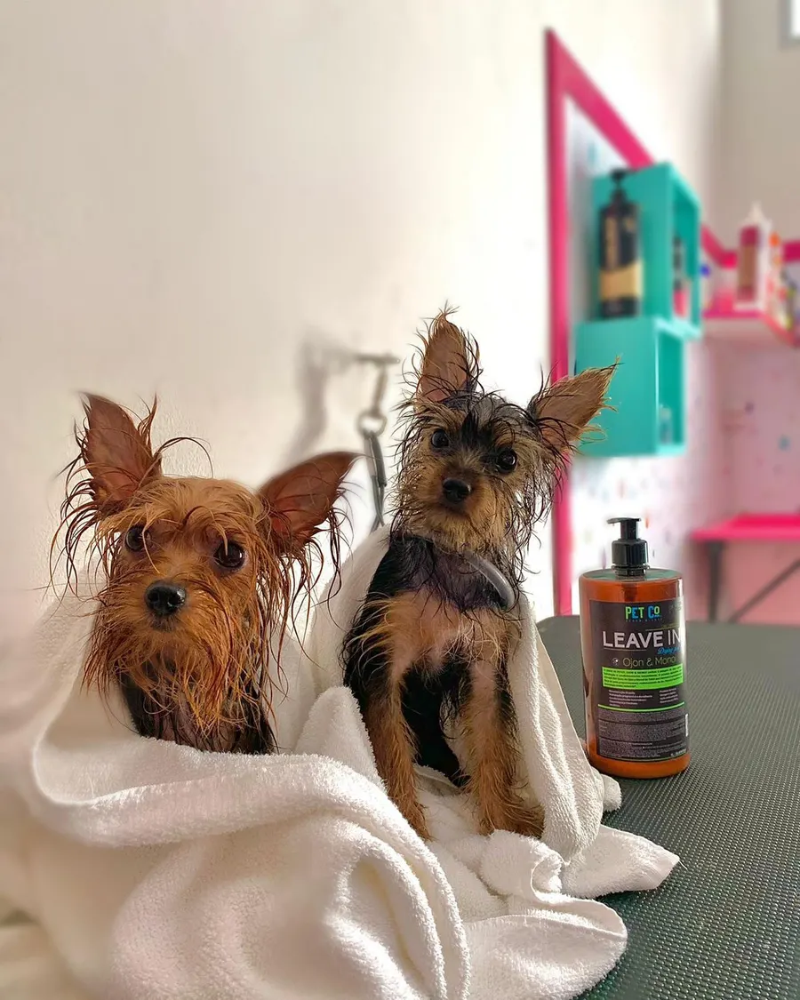
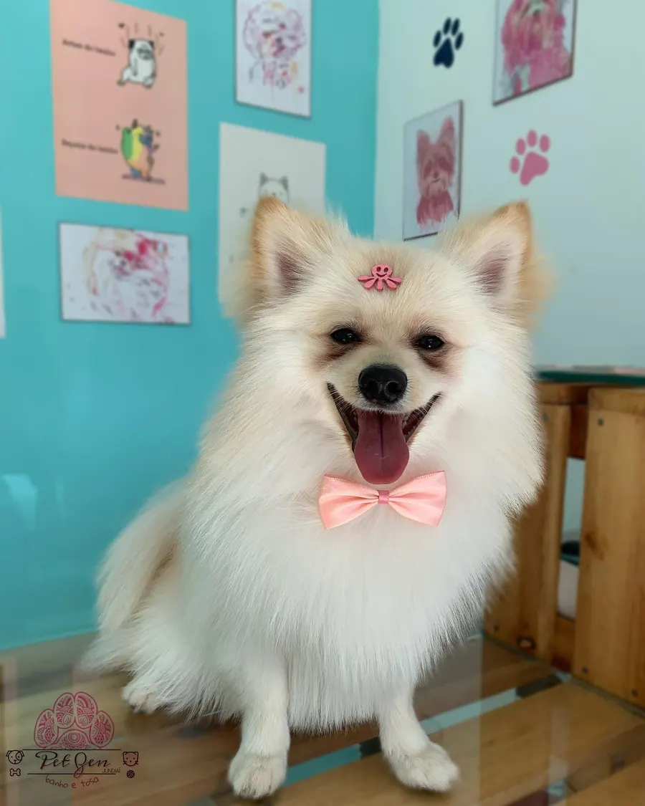
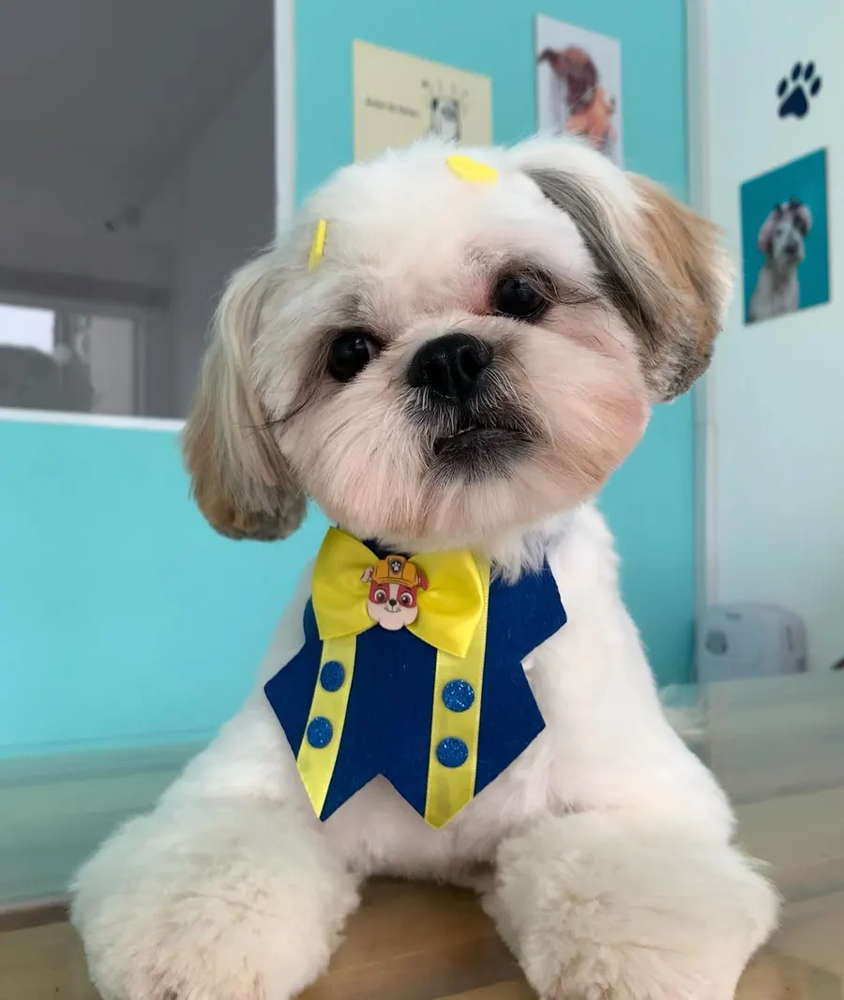
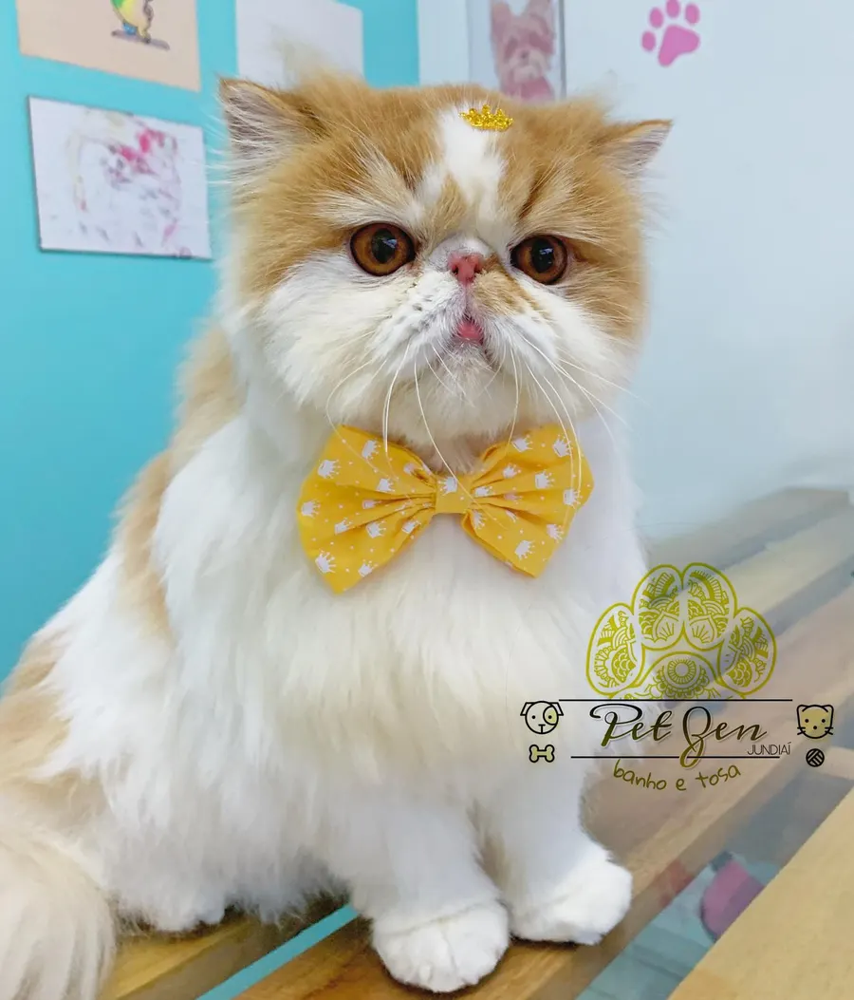
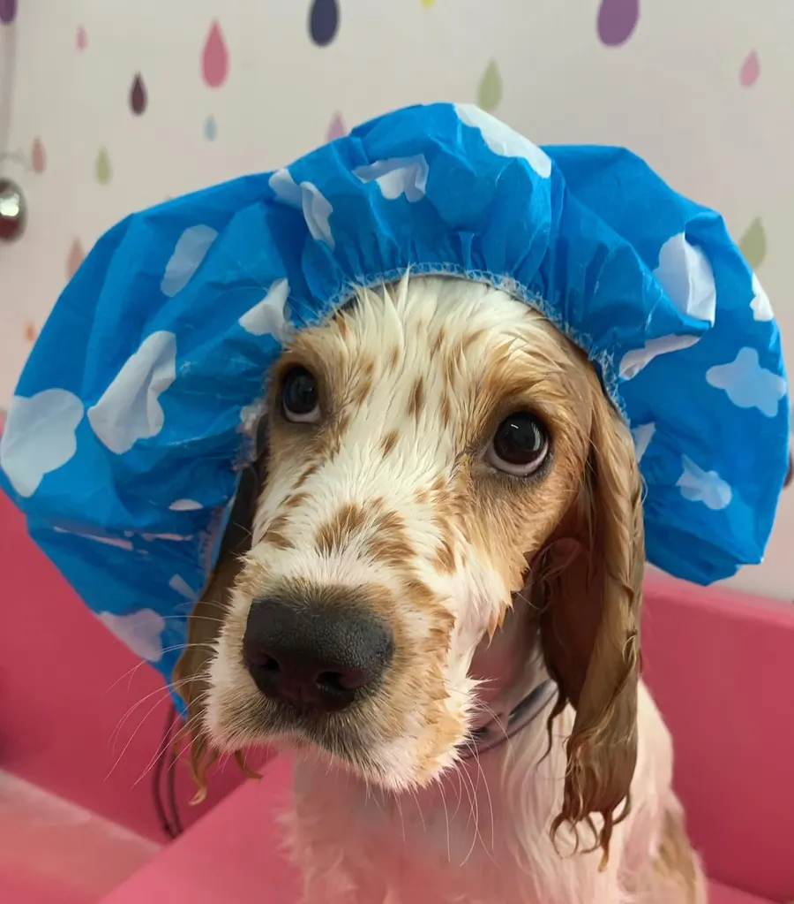
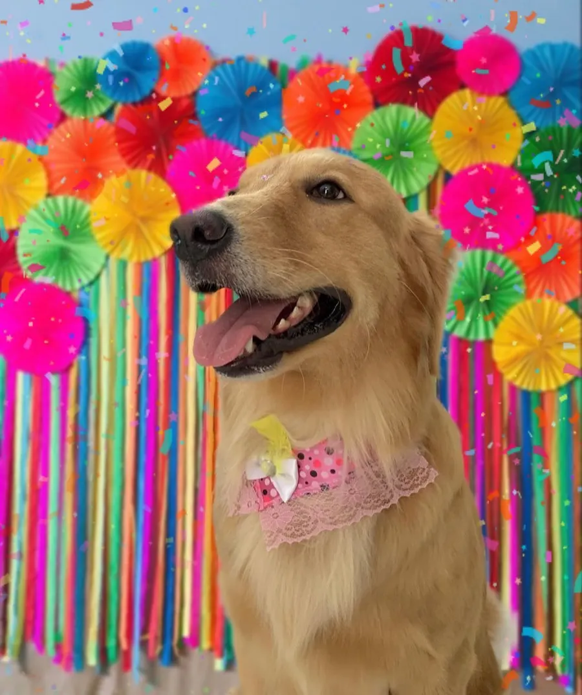
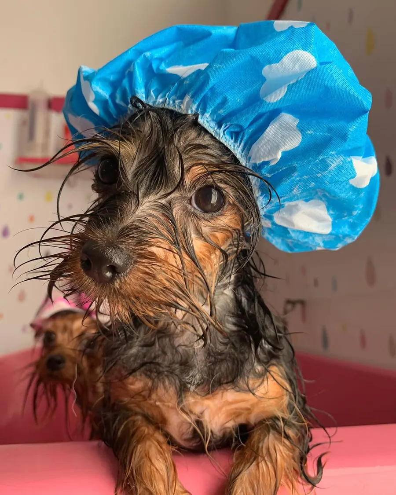

🛁
Banho
Água quentinha e filtrada (ducha Pure Shower Pet), perfume e lacinho.
Um momento único e cheio de amor pro seu filho de patas 🐾🫧

Centro de Estética Pet com conceito moderno, estrutura preparada e profissionais que tratam cada pet com carinho, respeito, dedicação e atenção. Cães e gatos, desde 2020.
Cheiroso, saudável e cheio de estilo. 🎀
Água quentinha e filtrada (ducha Pure Shower Pet), perfume e lacinho.
Na máquina, na tesoura, bebê/fluffy e higiênica.
Pelos, coxins (patinhas) e focinho macios e protegidos.
Técnica Rake: até 90% menos queda de pelos.
Banho e tosa com manejo calmo e respeitoso.
Buscamos e levamos seu pet.






Um banho de verdade zen, do começo ao fim. 🫧
Ducha Pure Shower Pet com duplo filtro de metais pesados e equilíbrio do pH da água. Pelo mais macio já no primeiro banho.
3 modos de ducha (chuva, massagem e misto) e esferas minerais ionizantes para um banho mais rápido e tranquilo.
Cuidado especial para cada um, inclusive tosa e remoção de subpelo para gatos.
No Jardim do Lago desde 21 de novembro de 2020, com espaço moderno e profissionais carinhosos.
Estamos no Jardim do Lago, em Jundiaí. Agende pelo WhatsApp! 🐾
Rua Breno Acioli, 20 – Jardim do Lago
Jundiaí – SP, CEP 13203-626
Terça a sexta: 09:30–18:00
Sábado: 09:30–15:30
Domingo e segunda: fechado